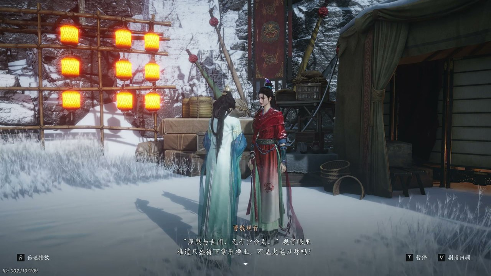

燕云背后的故事：第13集 第十三集 凉州

朋友们，上一集咱们说到——鬼市凶险、红衣接头、清河旧案——那一桩桩诡事搅得神仙渡不得安宁，暗处的眼睛越盯越紧，江湖的风也越来越腥。新来的朋友可能纳闷：这神仙渡不是个隐居避世的地方吗，怎么又是血经又是定亲宴的？简单说，这回咱们不说神仙渡，单说河西地界一户姓曹的望族，家里有个自幼体弱、被送进寺庙礼佛抄经的女儿叫曹敬观音。可她哪知道，抄经养病是假，家族联姻是真，一方佛门净土也藏不住俗世的算计。这不，这日见空师太在观音殿里苦口婆心劝她归家，说什么经书是死物人才是活的，硬要把家人托付的梳子塞回她手里。

观音殿里青烟打着旋儿往房梁上飘，佛垂着眼，像个啥都看透了却又啥都不说的老人。见空师太盘腿坐在蒲团上，手里佛珠一颗一颗捻过去，嘴上不停：“女娘天生慧根，跟观音菩萨有缘，可你瞧瞧这大般若经的梵文原典，难得可再难得，到底也是个死物，人才是活的呀。”她说着把一把木梳往曹敬观音手边推了推，那是家里人托她带进来的，意思再明白不过——别抄了，回家吧，那亲事定了就定了，你躲得过初一躲不过十五。曹敬观音跪坐在佛前，手里攥着笔，笔尖悬在经纸上方，一滴墨半天没落下去。她没抬头，声音平平的：“师父还是唤我居士吧。我留在寺中抄经，是为解家中祖母治病，抄完后我自会回家。那梳子烦请师太带回去。”见空师太叹了口气，摇了摇头：“你这孩子，你若归家，老夫人哪还会有什么病？”殿里静得只剩佛珠碰撞的细碎声响，曹敬观音没应声，笔尖终于落下去，一笔一划，血色的字洇在纸面上，像在心里剜了个口子。

可你说巧不巧，就在这时候，藏经阁角落里那一排经架后头，忽然有人轻轻笑了一声。曹敬观音手一抖，抬头看过去，一个穿红衣的少年从暗处慢悠悠踱出来，手里正掂着她那卷还没抄完的血经，脸上挂着那种让人想抽他又下不去手的笑。“好姐姐，”他把经书往怀里一揣，“我足足跟了你七天，你家的事我也听了一耳朵，横竖是你家给你许的夫婿，你看不上便跟你祖母闹了起来——一个装病，一个赖在庙里不回家，说那什么大般若经甚是难得，要抄来给他祈福。”曹敬观音脸都白了，搁下笔站起来：“小贼，把经书还我！”她往前抢了一步，少年却往后退了半步，压根不慌，反倒凑近了些压低声音：“不是背，你怎么总盯着他看啊？”这话像针一样扎过来，曹敬观音一时语塞，脸上一阵热——她确实在抄经的间隙偷看过那幅河西地图，可这事只有她自己知道，他怎么会……正僵持着，外头忽然炸开一声喊：“进贼了！金阁进贼了！”脚步声从走廊那头轰隆隆逼近，红衣少年咧嘴一笑，踩着窗棂三两下翻上房梁，回头冲她挤了挤眼睛：“菩萨赏了我就是我的喽，你可一定要抄完还我哦。”说完一个翻身就消失在窗外的暮色里，留下一句“你就是我的活菩萨”在殿里飘着，惹得曹敬观音攥紧了拳头，又气又慌。

要说这曹家，在河西地界也算有头有脸，给女儿定亲那排场自然小不了。定亲宴那日，府里张灯结彩，戏台子上锣鼓喧天，长辈们满面红光地坐在正席上，推杯换盏间全在夸那准姑爷家世好、门第高。曹敬观音她爹端着酒杯笑得眼睛都眯成了一条缝，拍着桌子跟旁边人吹：“放眼整个河西，也没几个汉女比我女嫁得好！若是佛祖保佑，说不定今后我女还有当王妃的命啊！”祖母把戏牌塞到曹敬观音手里，嘴上说“今儿个呀她最大”，可句句不离婚事定了、日子瞧了、嫁妆备了。戏台上正唱着才子佳人的戏，台下笑声一阵接一阵，满院子热闹得像滚开的锅。曹敬观音坐在席间，手里的戏牌边角被她捏得发皱，脸上的笑像是用尺子量好了弧度挂上去的，眼睛里却空荡荡的，像这满府的热闹都跟她隔了一层看不见的纱。说实在的，看到这儿我心里真不是滋味——满院子的人没一个问她愿不愿意，她就是个摆在台面上的观音像，谁都能来上一炷香，可谁在乎那香火烫不烫手呢？

巧就巧在，杂耍班子上来的时候，曹敬观音一眼就认出了那个领头的走索人。红衣小贼换了身行头，脚踩绳索在丈把高的空中翻腾，凭空一抖手就续出一截新绳，人跟着荡回去再折返回来，身法轻得像片被风卷起的叶子，台下一片叫好声。他一个翻身落在台沿上，目光穿过满院宾客直直锁在曹敬观音脸上，嬉皮笑脸地冲她拱了拱手，嘴里说着吉祥话，眼睛却亮得很：“回菩萨奶奶，小子学法术十余年，别说凭空生绳，就是穿墙飞天、隔空取物也不在话下——若菩萨们想见见贵府女娘，佛慧深重，正可随小子一窥精妙。”老夫人还没反应过来，曹敬观音已经“噌”地站了起来，祖母还以为她新鲜想试，她却咬着牙低声道：“祖母，我想试试。”话音没落人已经追着那红衣身影出了府门。巷口风大，吹得她裙摆翻飞，她一把拽住那小贼的衣角气喘吁吁：“你站住！”小贼回头笑得没心没肺：“姐姐别追了，裙子那么漂亮，跑起来会弄脏的。”可随即他神色正经了些，指了指她怀里的血经：“我都到这儿了，当然是要偷最大的宝贝——你那血经以心血抄就，是难得的有法力根基的物件，我要用它救人。”曹敬观音一愣，手不自觉地按紧了经卷，可那小贼已经把话撂下了：“你得了自在，不能让我白忙呀。”

他们带着血经赶到一间偏僻的小屋时，里头那股药味混着香灰的气息直冲脑门。一个面容憔悴的女子缩在墙角，怀里抱着件大红嫁衣，嘴里含含糊糊地反复说着“你背我下轿，跨了火盆，拜了天地，然后在喜堂上弃我而去”。曹敬观音站在门边，看着小贼将那卷血经投入火盆，纸张卷曲、焦黑、碎成灰，然后他蹲下来把那灰兑了水喂那女子喝下去——火光跳动着，映得三娘那张脸半明半暗。她忽然一把抓住小贼的袖子，又哭又笑：“你回来了？你回来陪我写帖子，和我宴宾客，你不在家都没人给我折桂花插凤冠了……”小贼没躲，低声说了一句让我后背都发凉的话：“那个陪你写帖子的人已经死了，死在那副身体里，留下的只是一具会动的皮囊。他没回头便是假的。”曹敬观音听到这儿，指尖深深掐进掌心，耳边又响起之前小贼说的那句“佛门之人逃避凡尘情爱，算得上什么高僧”。她看着三娘那双渐渐涣散的眼睛，心里像被人狠狠拽了一把——原来剃度出家、青灯古佛，也可以是另一种逃。

从别院出来夜风凉飕飕的，吹得人脑子清醒了不少。小贼从怀里摸出一本泛黄的册子，封皮都磨破了边，嬉皮笑脸地塞到曹敬观音手里：“烧了你的血经，我拿我的神通册子赔你，这里头三千神通，我师傅传给我的，可比你那经书值钱多了。”曹敬观音翻了两页，纸上密密麻麻画着各种符咒和注解，她抬眼瞥他：“你又在骗人。”小贼难得收起那副吊儿郎当的样子，清了清嗓子：“我可是正经长安人，我爹是个诗人，长安大道横九天，青牛白马七香车——这诗就是他写的，你爱信不信。”他说这话的时候眼睛很亮，像是真把长安城那座比山还高的明月楼装在了里头。末了他凑近一步，声音放低了：“就今晚，花灯会上月亮最大的时候，我给你变个真的法术，帮你了却心结。输定了。”曹敬观音攥着那本册子站在巷口，看着他转身走进夜色里，红衣被风掀起一角，像团火越走越远。她半天没动，风把她的衣带吹得飘来飘去——被困在莲台上这么些年，头一回有人跟她说，你可以下来走走。

花灯会那夜，满街的琉璃灯挂得像一条发光的河，人挤着人，笑声和吆喝声搅在一起。曹敬观音独自走在人群里，偶遇了从前认识的闺中旧友，被拉着在一处灯谜摊前停下来。摊主指着一条谜面笑呵呵地说：“若说世上有什么人人皆有、看似毫不稀罕却又贵重无比的东西，那定是一颗佛心吧。”旧友推她：“你学问好，快猜呀。”她还没来得及开口，又被另一条谜面吸住了目光——“线断才可解脱”。旧友撇嘴说这谜出得不好，不吉利，可曹敬观音却怔住了，脑子里翻来覆去想起经书里的那些字句。她接着念下一个谜面：“舍得千秋得朝夕，舍得极乐土得以我执。”念到一半嗓子忽然发紧，眼眶一阵热——从前她以为自在是在经文里、在佛前、在远离红尘的地方，可三娘的那张脸、小贼那句“观音逃下莲台了还要回去吗”、见空师太那句“人才是活的”，全在这一刻涌上来。最后看到一个猜字谜：“口中含剧，歌手四方”，她轻声念了两遍，忽然弯起嘴角——歌手四方方得极乐土，原来极乐不在西天，就在你肯迈出去的那一步里。
这一集看下来，我最大的感受就是一个困在莲台上的姑娘终于肯自己走下来了。上一集里我们只知道神仙渡的水深不见底，到了这一集，河西曹家的观音出来了，红衣小贼的来路露了底，血经烧给三娘治的是心病，佛门负心人的往事扎了谁的心，那三千神通册子又埋了什么线。可那血经烧尽了，小贼的真本事到底是骗人还是真仙法？他说自己是长安人，那长安大道九横天的诗真是他父亲写的？花灯会上说好的那个法术，他到底还会不会来？这些线头越扯越多，全等着月亮最大的那一夜来收拢了，而我们那位头一回把菩萨盖头扯下来的观音，心已经动了。下一集花灯会，绝对要出大事。看完这集的各位，你觉得曹敬观音该不该信那个红衣小贼？如果你是困在曹府里的观音，你敢不敢跟他走？点个关注，咱们下集继续看——花灯亮起来的时候，人心才是最藏不住的东西。
关于我们
📱 公众号名称：三天游戏
✍️ 作者：曾三天
扫码关注公众号，获取每日最新资讯

商务合作与版权
商务合作 / 内容投稿 / 品牌推广
请关注公众号「三天游戏」后台留言联系
版权声明：本文由作者整理，转载需注明出处。